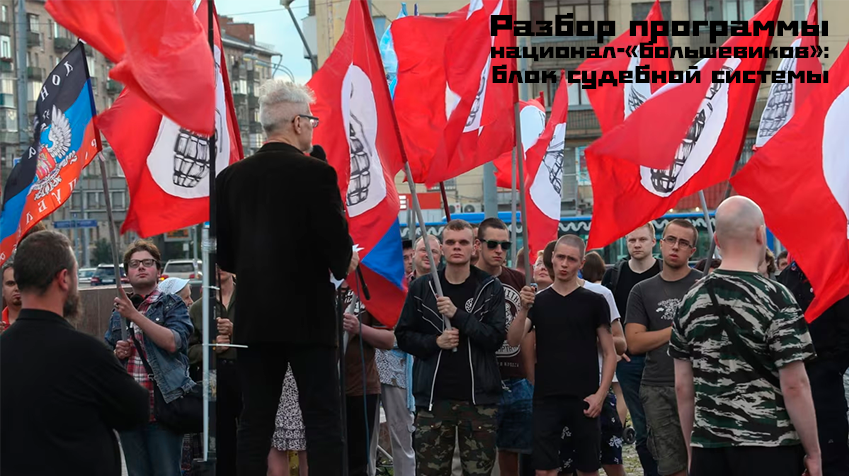

|
|
|
БЛОК СУДЕБНОЙ СИСТЕМЫ (разбор программы 2010)

|
Приветствую, товарищи! Сегодня продолжим разбирать программу партии нацболов «Другая Россия Эдуарда Лимонова» и остановимся на судебной системе в их понимании. Итак, чего же хорошего нам обещают? «Восстановим реальную независимость судебной власти. Судьи всех инстанций, включая составы Верховного и Конституционного судов, будут избираться гражданами и будут ответственны перед гражданами. За независимостью судей будет следить "Комитет по судебной этике". Слишком жестокий сегодня Уголовный кодекс РФ будет смягчен. Будет, в частности, введено наказание в виде штрафа (а не лишение свободы как сейчас), по статьям 158 и 228, части 1. Будет уничтожено значение "признания" как доказательства вины. Будет уничтожена "вилка" наказания». На что первое можно обратить внимание, так это, может быть, на приблизительное сохранение существующей судебной системы. Судьи будут ответственны перед гражданами, и избираться тоже будут гражданами. Какой из этого мы можем сделать вывод? Что слома государственного аппарата может не произойти, сохранится тот, который имеется на данный момент. Вполне себе нормальный инструмент капиталистического общества. «За независимостью судей будет следить «Комитет по судебной этике». Сразу же возникают вопросы. Что такое этот «комитет»? Из кого он будет формироваться? Каковы гарантии независимости судебной власти, если за независимостью судей будет следить какой-то комитет? В общем, история мутная. Это чем-то похоже на суд братчины («братчина» – от слова «брат»). В период существования Московского государства, с середины четырнадцатого века и до реформ Ивана IV, была такая привилегированная категория людей, как гостиные суконные сотни. Они подлежали так называемому суду братчины, то есть судить их могли только они сами. Вполне себе нормальное такое сословное явление эпохи развитого феодализма. Мне кажется, что ассоциация с «Комитетом по судебной этике», вполне себе подходящая.
По поводу жестокости Уголовного кодекса Российской Федерации. Я не юрист, следовательно, не могу объективно оценивать его «жестокость». Как обычного гражданина меня больше волнует то, как у нас выносятся приговоры. Из официальной статистики мы знаем, что в настоящее время количество обвинительных приговоров в РФ составляет 99%. Напомню, что в России дореволюционной соотношение обвинительных и оправдательных судебных решений после судебной реформы Александра II составляло 60% на 40% соответственно. Конечно, огромную роль в этом играли присяжные заседатели. А в «тоталитарном совке», где «кровавая гэбня», как всем известно, всех расстреливала и съедала, количество обвинительных оправдательных договоров было и вовсе 50 на 50. Даже куда более демократично, чем в царской России, и, как бы это ни показалось странным, чем в нынешней Российской Федерации. Откуда такой перекос? Вопрос ведь не в том, что в Кодексе написано, а в том, как работает судебная система и какова правоприменительная практика. Но это уже тема для отдельного исследования.
«Будет, в частности, введено наказание в виде штрафа (а не лишение свободы как сейчас), по статьям 158 и 228, части 1». Поясняю: статья 288, часть 1 – это ответственность за хранение наркотиков. Статья 158 – это кража, то есть это тайное хищение чужого имущества без насилия и всего такого. Комментарии нужны? «Будет уничтожена "вилка" наказания». Честно говоря, я совсем не специалист в этом вопросе, поэтому, если, по вашему мнению, трактую что-то неправильно, выскажитесь в комментариях. Понимаю так: есть наказания основные и дополнительные, и эта «вилка наказаний» позволяет суду осуществлять определенную вариативность. Имею в виду логику уголовного закона как такового. «Вилка» нужна для того, чтобы у судьи была возможность маневрировать, когда у подсудимого есть различные смягчающие и отягчающие обстоятельства. Если судья за какое-либо деяние применит жестко установленную меру наказания, это будет означать лишь только то, что он не примет во внимание индивидуальный характер конкретного случая. В идеале судья должен учитывать особенности каждого преступления и принимать во внимание особенности личности каждого обвиняемого, исходя из всех обстоятельств дела. Но «Другая Россия Эдуарда Лимонова», судя по всему, не считает такой подход правильным. Можно себе представить, какие будут выноситься приговоры в отношении тех, кто посягнёт на интересы правящего капиталистического класса или на основы необходимого ему общественного уклада после судебной реформы нацболов. |
|
Красный Ёж |
Статьи: | Мы в соцсетях
|